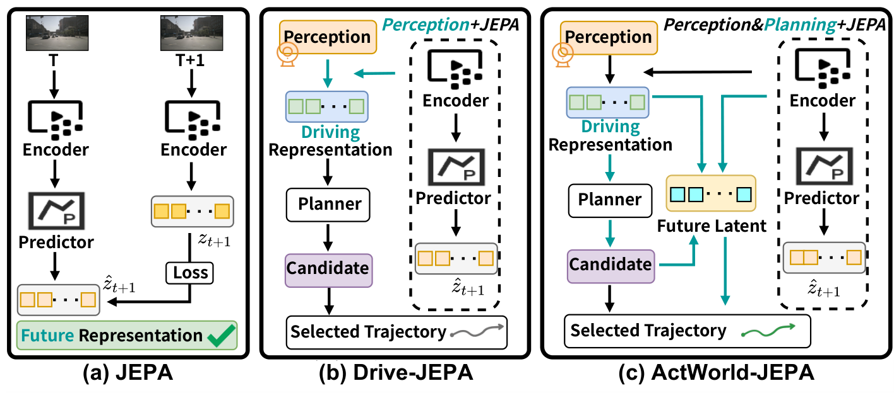

Plan-conditioned JEPA
Candidate actions condition latent dynamics, connecting future prediction to the decisions the planner needs to make.
ACTION-CONDITIONED WORLD MODELING · LATENT PLANNING
1Nanyang Technological University 2Beijing Jiaotong University
3Dalian University of Technology 4Beijing Institute of Technology
5The University of Queensland
† Equal contribution * Corresponding author
Candidate plans shape the predicted future.
The predicted future informs the next plan.
NAVSIM VIDEO DEMO
31.5 seconds · three continuous turning clips · source cadence 2 Hz. Offline replay of saved ActWorld-JEPA predictions, not closed-loop driving. BEV actors are dataset annotations; predicted trajectories are unmodified. Camera privacy masking applied.
Data: nuPlan/Motional and OpenScene. Derived media: CC BY-NC-SA 4.0 and nuPlan non-commercial dataset terms. Provenance, license and rendering instructions ↗
MOTIVATION
A future representation becomes useful to a planner when it is connected to a candidate action. ActWorld-JEPA makes that connection explicit through action-conditioned latent prediction.


THE IDEA
ActWorld-JEPA connects a perception-based driving planner with action-conditioned latent future prediction. The base planners are iPad for NAVSIM and MomAD for nuScenes. Candidate trajectories guide the JEPA rollout; current and predicted-future representations inform plan compatibility and trajectory selection.
Candidate actions condition latent dynamics, connecting future prediction to the decisions the planner needs to make.
Plan–future compatibility and candidate relationships refine the base planner’s decisions.
Use candidate-conditioned predictions to guide the final trajectory, with the selection or refinement pipeline specified for each benchmark.
MAIN EXPERIMENTS
| Benchmark | Metric | Result | Protocol |
|---|---|---|---|
| NAVSIM v1 NAVTEST | PDMS ↑ | 90.07 | Leaderboard evaluation |
| NAVSIM v2 NAVTEST | EPDMS ↑ | 91.6 | NAVTEST evaluation |
| NAVSIM v2 NAVHARD | Combined EPDMS ↑ | 42.7 | Two-stage evaluation |
| nuScenes · 6 s | L2 (m) ↓ | 2.3945 | Validation split |
Results use the released benchmark-specific configurations. Evaluation details ↗
| Metric | 1 s | 2 s | 3 s | 4 s | 5 s | 6 s | Mean |
|---|---|---|---|---|---|---|---|
| L2 (m) ↓ | 0.2780 | 0.5380 | 0.8851 | 1.3135 | 1.8181 | 2.3945 | 1.2045 |
| Box collision (%) ↓ | 0.012 | 0.136 | 0.344 | 0.723 | 1.334 | 2.034 | 0.7638 |
QUALITATIVE RESULTS
Front-view visualizations and bird’s-eye-view plans from NAVSIM and nuScenes. Select a collection; open an image to inspect it at full resolution.


REPRODUCE ACTWORLD-JEPA
Choose a benchmark, prepare its environment and data, then download the matching weights and run evaluation. The released main models do not require retraining.
Find each reported result beside its checkpoint and required selectors.
02 / PREPAREDownload, verify files, and prepare the data for your benchmark.
03 / EVALUATEFollow benchmark-specific commands and locate the resulting predictions and scores.